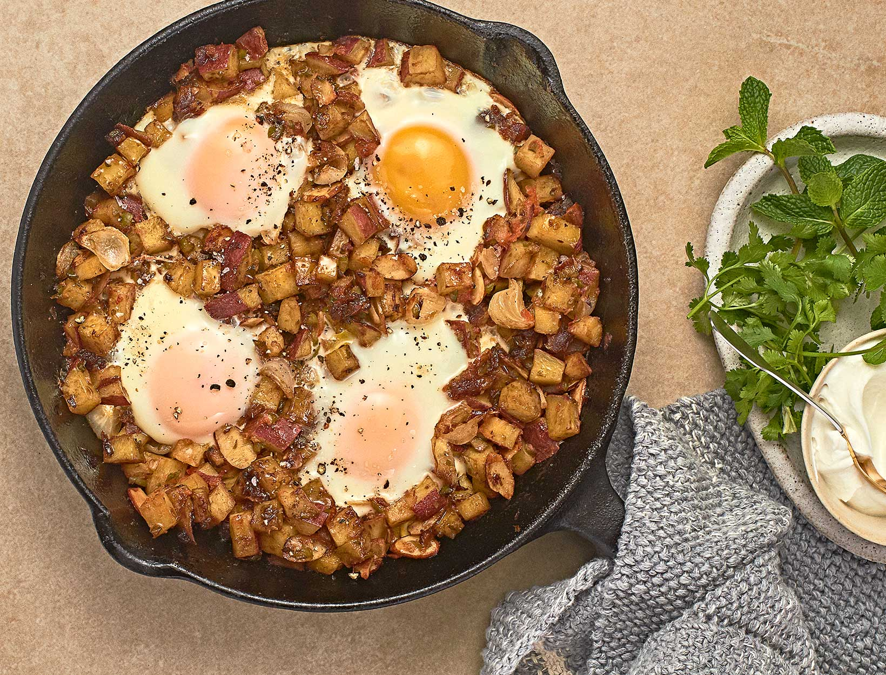

Breakfast Hash

Description
This breakfast hash is made from japanese sweet potatos and is a great way to start the day. Full of protein and other vital nutrients for your body and totally paleo friendly!
Ingredients
- 2 large sweet potatoes diced into small cubes
- 4 large handfuls of organic spinach
- 1 organic onion diced
- 1 package of uncured organic bacon diced
- 1 Tbsp. coconut oil
- 3 2-4 large eggs
Steps
- Begin by dicing the onion, sweet potatoes and organic bacon
- Add the coconut oil to a well heated pan, But not too hot as the smoke point of Coconut oil is very low
- Next, cook the diced bacon in the pan then remove it and set it to the side
- After removing the bacon, add in the onions and saute' until they are transparent
- Next add the sweet potatoes to the pan and let them cook for a few minutes on top of the onions
- Flip the potatoes from the bottom and add in the spinach
- After cooking for a few minutes make holes to add in however many eggs you'd like then cover the pan with a lid
- Remove the lid after about 5 minutes and serve hot !